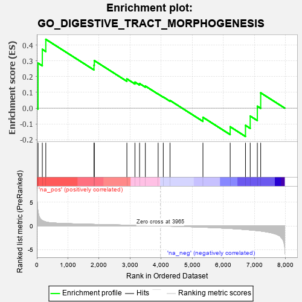
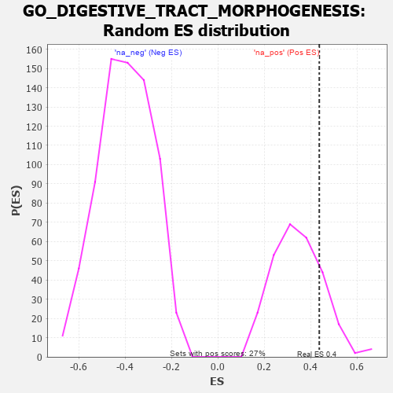

| | | Dataset | 7d |
| Phenotype | NoPhenotypeAvailable |
| Upregulated in class | na_pos |
| GeneSet | GO_DIGESTIVE_TRACT_MORPHOGENESIS |
| Enrichment Score (ES) | 0.43705183 |
| Normalized Enrichment Score (NES) | 1.2623297 |
| Nominal p-value | 0.18248175 |
| FDR q-value | 0.43525866 |
| FWER p-Value | 1.0 |
Table: GSEA Results Summary

Fig 1: Enrichment plot: GO_DIGESTIVE_TRACT_MORPHOGENESIS
Profile of the Running ES Score & Positions of GeneSet Members on the Rank Ordered List
| PROBE | GENE SYMBOL | GENE_TITLE | RANK IN GENE LIST | RANK METRIC SCORE | RUNNING ES | CORE ENRICHMENT | | 1 | SIX2 | | | 40 | 3.152 | 0.2856 | Yes |
| 2 | FOXF1 | | | 176 | 1.136 | 0.3733 | Yes |
| 3 | SHOX2 | | | 288 | 0.842 | 0.4371 | Yes |
| 4 | GATA4 | | | 1837 | 0.330 | 0.2729 | No |
| 5 | TCF7 | | | 1848 | 0.328 | 0.3019 | No |
| 6 | FGFR2 | | | 2895 | 0.167 | 0.1858 | No |
| 7 | SFRP5 | | | 3154 | 0.129 | 0.1653 | No |
| 8 | SMAD3 | | | 3303 | 0.105 | 0.1564 | No |
| 9 | GLI1 | | | 3489 | 0.079 | 0.1404 | No |
| 10 | NIPBL | | | 3900 | 0.010 | 0.0898 | No |
| 11 | SFRP2 | | | 4065 | -0.018 | 0.0708 | No |
| 12 | WNT11 | | | 4282 | -0.056 | 0.0489 | No |
| 13 | TCF21 | | | 5340 | -0.283 | -0.0580 | No |
| 14 | SMAD2 | | | 6216 | -0.541 | -0.1181 | No |
| 15 | EGFR | | | 6708 | -0.765 | -0.1093 | No |
| 16 | AHI1 | | | 6860 | -0.848 | -0.0501 | No |
| 17 | BBS7 | | | 7089 | -0.988 | 0.0123 | No |
| 18 | OVOL2 | | | 7197 | -1.068 | 0.0973 | No |
Table: GSEA details [plain text format]

Fig 2: GO_DIGESTIVE_TRACT_MORPHOGENESIS: Random ES distribution
Gene set null distribution of ES for GO_DIGESTIVE_TRACT_MORPHOGENESIS